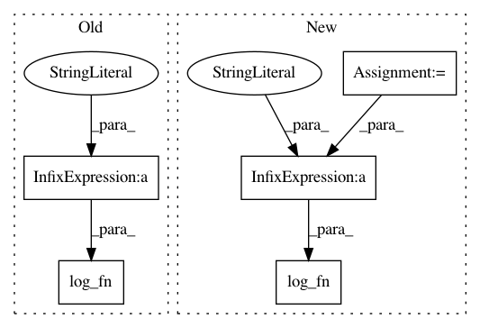

21d5d9ff18e2ebb034e95871e311e5232bbf1826,scripts/tf_cnn_benchmarks/tf_cnn_benchmarks.py,BenchmarkCNN,_benchmark_cnn,#BenchmarkCNN#,917
Before Change
while not global_step_watcher.done():
time.sleep(.25)
log_fn("-" * 64)
log_fn("total images/sec: %.2f" %
(global_step_watcher.steps_per_second() * self.batch_size))
log_fn("-" * 64)
// Save the model checkpoint.
if FLAGS.train_dir is not None and is_chief:
checkpoint_path = os.path.join(FLAGS.train_dir, "model.ckpt")
After Change
// Waits for the global step to be done, regardless of done_fn.
while not global_step_watcher.done():
time.sleep(.25)
images_per_sec = global_step_watcher.steps_per_second() * self.batch_size
log_fn("-" * 64)
log_fn("total images/sec: %.2f" % images_per_sec)
log_fn("-" * 64)
if is_chief:
store_benchmarks({"total_images_per_sec": images_per_sec})
// Save the model checkpoint.
In pattern: SUPERPATTERN
Frequency: 3
Non-data size: 5
Instances
Project Name: tensorflow/benchmarks
Commit Name: 21d5d9ff18e2ebb034e95871e311e5232bbf1826
Time: 2017-06-02
Author: annarev@google.com
File Name: scripts/tf_cnn_benchmarks/tf_cnn_benchmarks.py
Class Name: BenchmarkCNN
Method Name: _benchmark_cnn
Project Name: tensorflow/benchmarks
Commit Name: f68d785068c9b53a7de28aee32e64b113c3d3873
Time: 2017-12-18
Author: reedwm@google.com
File Name: scripts/tf_cnn_benchmarks/benchmark_cnn.py
Class Name: BenchmarkCNN
Method Name: print_info
Project Name: tensorflow/benchmarks
Commit Name: 9a20838a7af123340df65b2177b26eb7f8cab316
Time: 2017-06-02
Author: annarev@google.com
File Name: scripts/tf_cnn_benchmarks/tf_cnn_benchmarks.py
Class Name: BenchmarkCNN
Method Name: _benchmark_cnn